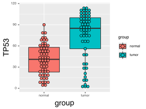
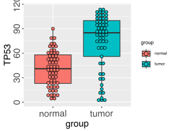
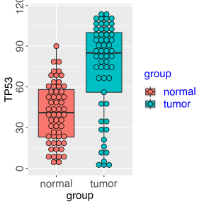
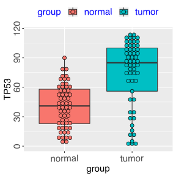
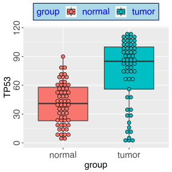
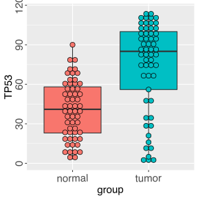

ggplot2 常规的图形参数调整
这一小节主要介绍利用boxplot来系统的展示一下如何对ggplot2进行图形参数的调整，让做出来的图更符合自己的标准。
以上一节的boxplot来做具体展示
#设置主题
#利用axis.title.x, axis.title.y改变x,y标题字体大小
P4 <- ggplot(rt_box, aes(x = group, y = TP53, fill = group)) +
geom_boxplot() +
geom_dotplot(binaxis='y', stackdir='center', position=position_dodge(1)) +
theme(axis.title.x = element_text(size = 20, angle = 1, vjust = 0.5, hjust = 0.5),
axis.title.y = element_text(size = 20, angle = 90, vjust = 0.5, hjust = 0.5))
print(P4)
#利用axis.text.x, axis.text.y 改变坐标轴字体大小
P5 <- P4 + theme(axis.text.x = element_text(size = 20, vjust = 0.5, hjust = 0.5, angle = 1),
axis.text.y = element_text(size = 20, vjust = 0.5, hjust = 0.5, angle = 450))
print(P5)

修改legend
#利用legend.title和legend.text改变图表legend字体的大小和颜色
P6 <- P5 + theme(legend.title = element_text(angle = 1, size = 20, colour = 'blue'),
legend.text = element_text(angle = 1, size = 20, colour = 'blue'),)
print(P6)
#利用legend.position设置legend的位置特征
P7 <- P6 + theme(legend.position = "top", legend.justification=c(0.5, 1), )
print(P7)
#利用legend.background可以给lenend添加背景颜色
P8 <- P7 + theme(legend.background = element_rect(fill="lightblue",
size=0.5, linetype="solid",
colour ="darkblue"))
print(P8)
#也可以去掉legend
P9 <- P8 + theme(legend.position='none')
print(P9)
 